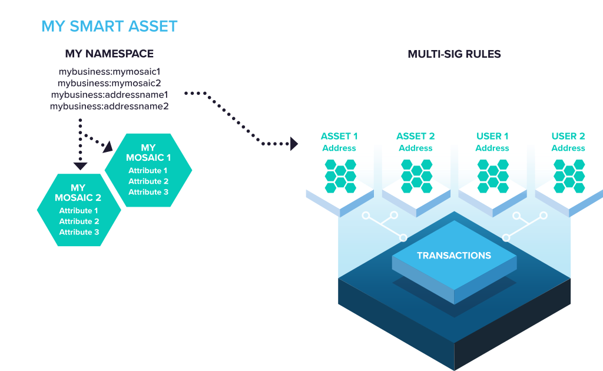

NEM
TECNOLOGÍA

Una implementación de la tecnología blockchain totalmente única
NEM NEM está construido desde cero como una plataforma potente y simplificada para desarrolladores de aplicaciones de todo tipo, no solo como una moneda digital. Utilizar NEM en tu aplicación es tan simple como realizar llamadas RESTful JSON API, lo que te permite configurar tus propios "Activos inteligentes" y utilizar la potente plataforma blockchain de NEM como una solución rápida, segura y escalable.
Configurado para su uso, NEM es adecuado para una increíble variedad de soluciones, como transacciones públicas directas a través de una aplicación optimizada para smartphones, servicios eficientes en la nube, que conectan aplicaciones cliente o web, o un back-end empresarial de alto rendimiento para empresas de mantenimiento de registros críticos.
Sistema de Activos Inteligentes
NEM está desarrollado en base a un potente sistema que te permite personalizar el uso de la blockchain. A esto lo llamamos el “Sistema de Activos Inteligentes” y te da la capacidad de utilizar NEM como si fuese una blockchain personalizada para tus activos y aplicaciones. En lugar de forzarte a escribir desde cero tu propio código de “smart contract” o utilizar métodos off-blockchain para definir activos personalizados para tu negocio. NEM te da acceso directo, a través de la API, a un conjunto de características especializadas, probadas y seguras, en la blockchain.

Los Activos Inteligentes de NEM se crean utilizando cuatro partes estrechamente conectadas

Dirección “Contenedor” de Activos Inteligentes
Las Direcciones NEM son contenedores de activos en la blockchain que puede representar un objeto único y actualizable. Las direcciones contienen Mosaics (definidos abajo). Una dirección puede ser tan simple como la cuenta de un usuario llena de monedas, como en la mayoría de blockchains.Pero también puede representar cosas como: un paquete que ha de ser enviado, la escritura de una casa o un documento que ha de ser notariado.
Los activos de direcciones se convierten realmente en inteligentes cuando se configuran con unas reglas especiales - directamente en la blockchain de NEM - que definen como se van a controlar y relacionar entre sí, también en, cómo se pueden actualizar y transferir sus contenidos. Un tipo de regla, crucial, es el control multi firma (normalmente llamado "Multisig") que permite que la propiedad de los activos de Direcciones se pueda compartir de diferentes formas entre múltiples partes, todo en la blockchain.
Mosaic (Token) Activos Inteligentes “Fijos”
Los Mosaics son parte de lo que hace que el Sistema de Activos Inteligentes sea flexible y único. Los Mosaics son activos fijos en la blockchain que pueden representar un conjunto de elementos múltiples idénticos que no cambian. Un Mosaic puede ser tan simple como un token pero también puede representar un conjunto de activos más especializados como: puntos de recompensa, acciones, firmas, indicadores de estado, votos o incluso otras divisas. Cada Mosaic se define por una variedad de atributos como: nombre, descripción, cantidad, divisibilidad, transferibilidad y más.
Los Mosaics se guardan dentro de las Direcciones (definidas anteriormente) y se pueden pasar entre éstas utilizando la API de NEM para representar una variedad de transacciones sorprendente como: registrar una firma, actualizar el estado de un producto, emitir un voto o simplemente pasar monedas o puntos entre cuentas.
Namespaces Personalizados
Los Namespaces te permiten crear un sitio único, para tus activos y negocios, en la blockchain de NEM. Un Namespace empieza con un nombre único que tú escoges, similar al nombre de un dominio en internet. Una vez escogido el nombre, tienes la capacidad de definir tus propios subdominios así como tus propios activos. Esto hace que tus activos sean confiables, fáciles de usar y únicos.
Transacciones
Las Transacciones son la forma en la que los Activos Inteligentes se ponen en acción. Las Transacciones te permiten transferir Mosaics entre Direcciones, transferir o configurar la propiedad de las Direcciones (incluyendo el uso de reglas Multi firma), enviar mensajes y más. La blockchain de NEM incluye una función integrada de mantenimiento del tiempo impulsada por consenso, de modo que las transacciones se imprimen con una marca de tiempo de forma automática y precisa.
Arquitectura de la Blockchain de NEM

La plataforma blockchain de NEM está construida a partir de una red de nodos que ejecutan el software de servidor del nodo central de NEM. En resumen, estos nodos proporcionan una plataforma potente, fácil de usar, estable y segura, donde se llevan a cabo, se buscan y se registran las transacciones de Activos inteligentes de manera inmutable, en el libro contable de la blockchain. Para hacer esto, los nodos ,en esta red, cumplen dos funciones esenciales:
Portal de acceso al Servidor API
En primer lugar, cada nodo proporciona la puerta de enlace API que las aplicaciones pueden usar para acceder a la blockchain y a sus características. Esto significa que tu aplicación no necesita ejecutar ningún software complejo del nodo; toda la funcionalidad de uso está disponible a través de la interfaz API en cada nodo de la red. Esto significa que la blockchain se puede usar para crear una variedad de soluciones de arquitectura con un código liviano en cualquier lenguaje de programación.
Algunos ejemplos de soluciones de arquitecura:
Mobile app direct access
A lightweight app directly interfaces to blockchain features

Client/server model
A gateway server manages blockchain usage for a client app or web service
Legacy system integration
A gateway server links existing business contract logic, systems, or databases to the blockchain ledger

Acceso directo a aplicaciónes móvil
Se conecta una aplicación liviana directamente a las características de la blockchain
Modelo cliente/servidor
Un portal de enlace administra el uso de la blockchain para una aplicación cliente o un servicio web
Integración de sistemas heredados
Un portal del enlace al servidor vincula la lógica de contratos comerciales existentes, sistemas o bases de datos, con el libro contable de la blockchain
La Red de Nodos de la Blockchain
En segundo lugar, cada nodo de NEM trabaja con otros nodos para crear la red blockchain peer-to-peer. En resumen esta red crea y sustenta la blockchain en sí. El software del nodo de NEM verifica las transacciones, mantiene una base de datos, se sincroniza con otros nodos y mantiene la estabilidad y la fiabilidad para crear una red escalable, rápida y segura.
Algunas de sus características distintivas incluyen:
Proof of Importance (PoI)
El consenso de NEM se basa en un algoritmo único proof-of-importance, que utiliza una técnica similar al PageRank de Google ,para evitar una variedad de ataques a la confianza de las transacciones de la blockchain. Tiene el mismo propósito que los mecanismos típicos de Proof-of-Work (PoW) utilizados por Bitcoin y otras blockchains, pero éste es de mayor escalabilidad y más eficiente en el consumo energético. Esto permite que los nodos se ejecuten en casi cualquier hardware y al mismo tiempo proporciona una red absolutamente segura que se puede escalar sin límite.
Eigentrust++
NEM implementa una versión modificada del algoritmo Eigentrust ++ que permite que los nodos juzguen de forma inteligente la "reputación" de otros nodos y rechacen a los malos actores, así como equilibrar la carga de la red de forma óptima.
Protección contra el Spam
Los nodos NEM implementan un filtro de spam incorporado que evita que la red se inunde por una avalancha de transacciones, asegurando automáticamente el rendimiento sin rechazar la transacciones buenas.
Sincronización de tiempo P2P
Para ser independiente de cualquier entidad externa (como NTP) para la sincronización de tiempo, NEM hace uso de un protocolo de sincronización de tiempo personalizado. Este protocolo garantiza que los nodos se estén sincronizando continuamente y de este modo conseguir un consenso de tiempo en la red. Esto garantiza marcas de tiempo fiables, que es vital en la tecnología blockchain. Leer más.

Incentivación de la Red mediante la Cosecha
La escalabilidad de la blockchain pública está auto-incentivada por "la cosecha". Cualquiera puede crear un nodo público, agregando capacidad a la red. Esa capacidad adicional se ve recompensada por la capacidad del nodo de recolectar las comisiones asociadas con cualquier transacción que procesen. Cualquier probabilidad de un nodo para cosechar un bloque se escala por la puntuación PoI de su cuenta, no por la potencia de procesamiento.
Las cuentas de usuario también pueden participar en la cosecha, sin la necesidad de configurar un nodo, esto pueden hacerlo mediante la "cosecha delegada". Para obtener más información, consulta nuestro Tutorial para Cosechar.
Soluciones Blockchain Privada Vs. Pública
Las Soluciones de NEM pueden adoptar una de estas dos formas: NEM proporciona una blockchain pública, descentralizada y autónoma que puede ser utilizada por cualquiera - así como una solución blockchain privada, que se puede proporcionar específicamente para el uso en tus propios servidores, cuando la privacidad y la velocidad sean la prioridad. Ambas soluciones utilizan el mismo código subyacente y son 100% compatibles con el API, proporcionando una flexibilidad adicional y garantías de futuro.
La Blockchain Privada de NEM
Cualquiera puede disponer de la versión del núcleo de la blockchain de NEM que es para utiliza en una red privada de nodos " de confianza". En esta configuración, los elementos del diseño que previenen los malos actores en la red pública pueden eliminarse , permitiendo que la velocidad de las transacciones aumente a miles por segundo. Los nodos son muy livianos y no necesitan hardwares especializados o base de datos back-ends. Se puede crear una red simple con la redundancia suficiente para prevenir la creación de malas transacciones o del empeoramiento del rendimiento de la red por parte de un nodo problemático. Se puede acceder a la red mediante cualquier cliente o software de servidor deseado a través de la interfaz API de NEM.
La Blockchain Pública de NEM
NEM ha creado una blockchain pública robusta, descentralizada y autónoma, que cualquiera puede utilizar para una gran variedad de aplicaciones. Para desarrollar en la blockchain pública, solo haz uso de la interfaz API en uno de sus nodos.
Para hacer uso de la red pública de blockchain, los usuarios deben pagar las transacciones con pequeñas comisiones en la moneda original de NEM: XEM. El importe de las comisiones aumenta en base al tamaño y la complejidad de las transacciones y se transfieren a los proveedores de la capacidad de red a través de la "cosecha" de comisiones en los nodos. Esto significa que la creciente demanda de escala y diversidad de la red está intrínsecamente incentivada y mantiene la blockchain pública de NEM, rápida y robusta.
Se puede comprar XEMs en uno de los distintos exchanges abiertos. Debido a que las tarifas en XEMs se utilizan para pagar transacciones comerciales reales en la blockchain pública, XEM reúne un valor inherente. Esto significa que con el tiempo XEM se convierte en una excelente moneda digital, que cualquier persona puede utilizar en la red NEM para almacenar o transferir valor.
Se proporciona una red de prueba pública donde los desarrolladores pueden probar las aplicaciones de blockchain de NEM sin riesgo o incurrir en comisiones reales de XEM.
¿Quieres profundizar más? Empieza con nuestra página de desarrolladores o nuestra documentación técnica detallada